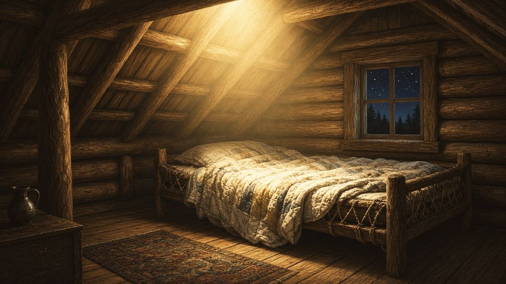
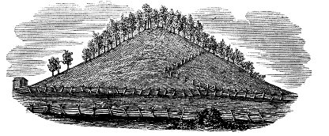
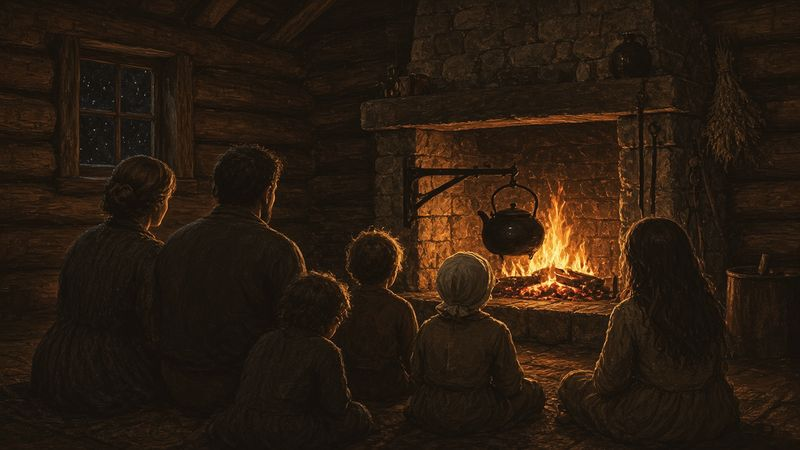
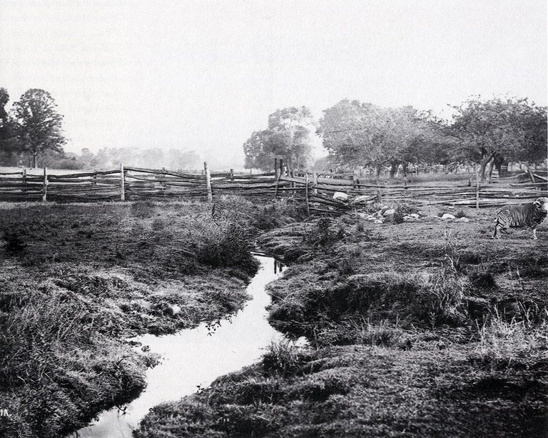

A Light in the Loft
Late at night, in the upstairs room of a log house in western New York, a light began to grow. It grew until the room was brighter than noon. And in the middle of it, beside the bed, stood a man whose feet did not touch the floor.1

The young man in the bed was seventeen. He had been praying to know whether God was still pleased with him. What came instead would set the course of the rest of his life.
To see why he was praying that night, go back a few hours, and a few years.
Three Years of Waiting
It was the evening of September 21, 1823, in the Smith family’s log house near Palmyra and Manchester, New York. Joseph Smith shared the loft bedroom with his brothers.
Three and a half years had passed since Joseph Smith’s vision in the grove. In that time, he later admitted, he had not always lived up to it. He had been “persecuted by those who ought to have been my friends,” and, “mingling with all kinds of society, I frequently fell into many foolish errors, and displayed the weakness of youth, and the foibles of human nature.” He was careful to say that he meant nothing grave: “no one need suppose me guilty of any great or malignant sins.” But he “was guilty of levity, and sometimes associated with jovial company,” and he blamed this partly on “my native cheery temperament.”2 Readers who met his grandfather Solomon Mack in Chapter 2 will recognize the family streak. In his 1832 account he put it more bluntly: “I fell into transgressions and sinned in many things which brought a wound upon my soul.”3
So that night, after the household had gone to bed, he prayed “for forgiveness of all my sins and follies, and also for a manifestation to me, that I might know of my state and standing before him.” He had full confidence that he would receive one, he said, “as I previously had one.”4
While I was thus in the act of calling upon God, I discovered a light appearing in my room, which continued to increase until the room was lighter than at noonday, when immediately a personage appeared at my bedside, standing in the air, for his feet did not touch the floor.5
The visitor wore “a loose robe of most exquisite whiteness,” and “his countenance truly like lightning.” Joseph was afraid at first, “but the fear soon left me.” The messenger called him by name and said that he had been sent from the presence of God, “and that his name was Moroni; that God had a work for me to do; and that my name should be had for good and evil among all nations, kindreds, and tongues.”6
Moroni told him of “a book deposited, written upon gold plates, giving an account of the former inhabitants of this continent, and the source from whence they sprang.” The book contained “the fulness of the everlasting Gospel,” as the Savior had delivered it to those ancient people. With the plates were two stones set in silver bows, which Joseph called “the Urim and Thummim,” prepared by God “for the purpose of translating the book.”7
Then the angel began to quote scripture. And the first scripture he quoted came from the last book of the prophets, the same words Jewish families remember when they open the door for Elijah.
“With a Little Variation”
“He first quoted part of the third chapter of Malachi,” Joseph remembered, “and he quoted also the fourth or last chapter of the same prophecy, though with a little variation from the way it reads in our Bibles.”8
Readers of Chapter 1 will remember these words. They close the Old Testament in Christian Bibles. In Jewish Bibles they close the book of the Twelve Prophets, and they are read aloud in synagogues on the Sabbath before Passover, when the reader repeats the promise so that the reading will not end on a curse. They are the reason a cup is poured for Elijah at the Seder and the door opened for him.9
In the King James Bible that Joseph knew, Malachi’s promise reads:
Behold, I will send you Elijah the prophet before the coming of the great and dreadful day of the LORD: And he shall turn the heart of the fathers to the children, and the heart of the children to their fathers, lest I come and smite the earth with a curse.10
Moroni quoted it differently:
Behold, I will reveal unto you the Priesthood, by the hand of Elijah the prophet, before the coming of the great and dreadful day of the Lord.
And he shall plant in the hearts of the children the promises made to the fathers, and the hearts of the children shall turn to their fathers. If it were not so, the whole earth would be utterly wasted at his coming.11
Two changes stand out. In Moroni’s version, Elijah does not only come; he brings priesthood authority. And the “fathers” are not only parents. They are the patriarchs, to whom “the promises” were made. To any reader of Genesis, those promises are the covenant with Abraham, Isaac and Jacob: a land, a posterity, and a blessing to “all families of the earth.”12 Moroni was saying that Elijah would plant those ancient covenant promises in the hearts of their descendants.
Moroni also quoted Isaiah 11, which tells of a day when the Lord will “set his hand again the second time to recover the remnant of his people” and “assemble the outcasts of Israel, and gather together the dispersed of Judah from the four corners of the earth.”13 He quoted Peter’s words in the third chapter of Acts about the prophet like unto Moses, and Joel’s promise that God would “pour out my spirit upon all flesh.”14 The very first message of the angel, in other words, was steeped in the hopes of the house of Israel.
Many Jewish readers, and many Christians, will not accept Moroni’s reading of Malachi. That is their right, and this book does not ask them to. But it is worth noticing that the first message of the Restoration, as Joseph recorded it, began where Jewish families end each Seder: with a promise that Elijah would come. Thirteen years later, the story would return to that promise.
There is a small coincidence of calendars here, which some Latter-day Saint writers have noticed. On the night of September 21, 1823, Jewish families were in the middle of Sukkot, the Feast of Tabernacles, living in their booths to remember Israel’s journey through the wilderness.15 Joseph never mentioned it, and probably never knew. It is mentioned here only as a reminder that the God of the Restoration is the God of Israel’s festivals too.
Three Times in One Night
The angel left the way he had come, the light gathering around him until “a conduit open right up into heaven,” and he was gone. Joseph lay “musing on the singularity of the scene,” when the room filled with light again. Moroni returned and repeated everything, “without the least variation,” and added warnings of judgments to come. He left and came back a third time, repeating it all again, and adding a caution: because the family was poor, Satan would tempt Joseph to get the plates “for the purpose of getting rich.” He must have “no other object in view in getting the plates but to glorify God.”16
When the angel left the third time, “the cock crowed, and I found that day was approaching, so that our interviews must have occupied the whole of that night.”17
The next morning Joseph went out to the field with his father and his brother Alvin, but he was too exhausted to work. His father told him to go home. Climbing the fence, he collapsed. The first thing he remembered was a voice calling his name, and Moroni standing over him. The angel told him to go back and tell his father everything.18
He did. Joseph Sr. listened to his son’s story there in the field, and his answer was immediate. “He replied to me that it was of God, and told me to go and do as commanded by the messenger.”19 The man who had dreamed for years of a dead world and a box of wisdom did not hesitate. His son, who had once been mocked by a preacher, was believed by his father in a single breath.
The Hill
About three miles south of the Smith farm stood “a hill of considerable size, and the most elevated of any in the neighborhood.” Joseph knew it from the vision the moment he saw it. Near the top, on the west side, he found a large rounded stone, its center showing above the ground. He pried it up with a lever. Beneath it, in a box made of stones set in cement, “there indeed did I behold the plates, the Urim and Thummim, and the breastplate, as stated by the messenger.”20
He tried to take them out. The messenger forbade him. The time had not yet come, and would not for four years. Joseph was to return to the hill on the same day each year to receive further instruction.21

In his 1832 account Joseph confessed what he had felt at the hill. He made “three attempts to get them,” and was so frightened that he thought it might have been a dream, “but when I considred I knew that it was not.” He cried to the Lord, “why can I not obtain them?” The angel answered that he had not kept the commandments, and that “thou wast left unto temptation that thou mightest be made accquainted with the power of the advisary therefore repent and call on the Lord thou shalt be forgiven and in his own due time thou shalt obtain them.”22 He had been thinking of what the gold might be worth. He would have four years to learn to think of something else.
Around the Fire
That evening Joseph told the whole family. He was so tired from sitting up late that Alvin, the oldest, proposed a plan: “now brother, let us go to bed, and rise early in the morning, in order to finish our days work at an hour before sunset; then, if mother will get our suppers early, we will have a fine long evening, and we will all sit down, and listen to you, while you tell us the great things which God has revealed to you.”23

So it became a family custom. Lucy remembered the scene with a kind of wonder:
I presume we presented an aspect as singular, as any family that ever lived upon the face of the Earth: all seated in a circle, father, mother, sons, and daughters, and giving the most profound attention to a boy, eighteen years of age, who had never read the Bible through in his life; for he was much less inclined to the perusals of books then any of the rest of our children, but far more given to meditation and deep study.24
Joseph charged them not to speak of these things outside the family, warning that the world would turn against them. Lucy said that “the sweetest union and happiness pervaded our family, and peace and tranquillity reigned in our midst.” Sometimes, in those evenings, Joseph would describe the ancient people of the plates, “their dress, mode of travelling, and the animals upon which they rode; their cities, and their buildings,” as easily “as if he had spent his whole life with them.”25
Picture the scene in the autumn of 1823: the fire, the younger children sitting up past their bedtime, Alvin at twenty-five leaning forward with his elbows on his knees.† Alvin, his mother said, showed “greater zeal and anxiety in regard to the before mentioned record, than any of the rest of the family.”26
Alvin
Alvin was the son who carried the family. He managed the building of a new frame house for his parents, and that November the frame was up and the materials gathered. “I am going to have a nice, pleasant room for father and mother to sit in,” he would say, “and every thing arranged for their comfort; and they shall not work anymore as they have done.”27

On November 15, 1823, about ten in the morning, Alvin came into the house doubled over with what Lucy called “bilious cholic.” A doctor gave him a heavy dose of calomel, a mercury compound commonly prescribed at the time, “though much against the will of the patient.” The calomel lodged in his stomach. Other physicians tried to remove it, without success. Alvin knew he was dying.28
He called his brothers and sisters to him one by one. To Hyrum he said, “I want you to go on and finish the house, and take care of them in their old age.” To Sophronia: “Be kind to them, and remember what they have done for us.” Then he turned to Joseph:
I am now going to die, the distress which I suffer, and the feelings that I have, tell me, my time is very short.—I want you to be a good boy, and do every thing that lays in your power to obtain the record—Be faithful in receiving instruction, and in keeping every commandment that is given you.29
Last of all he asked to see his little sister Lucy, not yet three, who called him “Amby.” She woke, ran to him, threw her arms around his neck and kissed him over and over. “Lucy,” he said, “you must be the best girl in the world, and take care of mother—you cant have your Amby any more—Amby is going away.” Then, as his mother turned away with the child, he said, “Father, Mother, brothers, and sisters, farewell; I can now breathe out my life as calmly as a clock.” He closed his eyes. He died on November 19, 1823, at the age of twenty-five.30 Outside, the frame of the new house stood in the November cold, the room he had planned for his parents still open to the sky.†
Joseph had lost the brother who believed in him most. Lucy said that “lamentation and mourning filled the whole neighborhood.” For a long time afterward, the family could not bear to talk about the plates, because every mention of them brought Alvin to mind. “We all with one accord wept over our irretrievable loss,” she wrote, “and we could ‘not be comforted because he was not.’”31
Alvin had never been baptized into any church. Some in the family’s world believed that meant he was lost. The question of what happens to good people who die without baptism would weigh on Joseph for years. Thirteen years later, in the temple at Kirtland, he would receive an answer that he recorded with joy. We will come to it.
A Seer for Hire
Grief had to give way to work. The family needed money to make the last payment on their farm, and in October 1825 Joseph and his father hired on with a well-to-do farmer named Josiah Stowell, from Chenango County, New York.32
This is a part of the story that critics have long pointed to, and it deserves a frank account. Stowell had heard of an old Spanish silver mine near Harmony, Pennsylvania, and he wanted Joseph’s help to find it because, as Lucy put it, Joseph “was in possession of certain means, by which he could discern things, that could not be seen by the natural eye.”33 Joseph had a seer stone, a small stone in which he and others believed he could see hidden things. In the rural America of his day, many people accepted such “seeing” as a natural gift. The Church’s own historians acknowledge plainly that “Joseph Smith and his family, like many around them, accepted these familiar folk practices.”34
Joseph tried to talk Stowell out of the venture, Lucy said, but the old man insisted and offered good wages. After about a month of digging with no success, Joseph “prevailed with the old gentleman to cease digging after it.” Joseph did not hide this part of his life. In his own history he wrote simply: “Hence arose the very prevalent story of my having been a money-digger.”35 In March 1826 Stowell’s nephew, claiming Joseph had taken advantage of his uncle, brought him before a local justice in South Bainbridge, New York. Stowell himself testified that Joseph had not deceived him. Saints reports that the charge was dismissed. Other accounts of the hearing, written down later, describe the outcome differently.36 That September, when Joseph went to the hill again, the angel told him to leave the company of the money diggers.37
Latter-day Saints see the treasure seeking as a stage that God redirected. Joseph’s father, according to the Church’s account, “considered his son’s ability sacred” and hoped he would stop using it for earthly treasure. As Joseph prepared to receive the plates, he was told to have nothing more to do with treasure seekers.38 The gift, they believe, was turned from looking for silver to translating scripture. Critics see it otherwise. Both can agree on the facts: Joseph worked for Stowell, he used a seer stone, and he never denied it.
Around this time, Lucy recorded, a preacher came through the neighborhood trying to unite the churches, and most of the family were inclined to join. Joseph refused even to attend. “I do not wish to prevent you from going to meeting,” he told his mother, “or any of the rest of the family, or even your joining any church you please; but do not ask me to join them: I can take my Bible and go into the woods, and learn more in two hours, than you can learn at meeting in two years.”39
Emma
While working for Stowell, Joseph boarded with a family in Harmony named Hale. Isaac and Elizabeth Hale were prosperous, and their daughter Emma, born July 10, 1804, had attended Methodist meetings with her mother since she was seven. She had likely studied at a nearby female seminary and later taught school.40 She liked to read and to sing. She was twenty-one. Joseph was nineteen, over six feet tall, blue-eyed, with a faint limp.41
Joseph “immediately commenced paying his addresses to her,” Lucy wrote.42 Emma’s parents did not approve. Joseph was a poor laborer from another state, and Isaac Hale had grown suspicious of his part in the treasure hunt, even though Joseph had persuaded Stowell to call it off.43 Joseph later wrote that because he kept insisting he had seen a vision, “my wife’s father’s family were very much opposed to our being married.”44
Back in Manchester, Joseph spoke to his parents. “I have been very lonely ever since Alvin died,” he told them, “and I have concluded to get married; and, if you have no objections, Miss Emma Hale would be my choice before any other woman I have ever seen.”45 They gave their blessing gladly, and Lucy began getting the house ready for a new daughter-in-law.
Joseph and Emma did not wait for her father’s permission. On January 18, 1827, they were married “at the house of Squire Tarbill, in South Bainbridge, Chenango county, New York.” Then they went to live with his family in Manchester.46 Through jails, mobs and grief, Emma would stand by him for the rest of his life. Emma had left her parents’ comfortable home for a family that had just lost its farm. That winter a dishonest scheme had cost the Smiths the deed to their land, and the farm had passed at the last hour to a friendly buyer, a Mr. Durfee, who let them remain.47
That year, coming home late from an errand, Joseph sat down exhausted and told his worried parents that he had received “the severest chastisement, that I have ever had in my life.” When his father angrily asked who dared find fault with him, Joseph stopped him. “It was the angel of the Lord,” he said. The angel had told him “that I had not been engaged enough in the work of the Lord; that the time had come for the record to be brought forth.” “Father,” he added, “give yourself no uneasiness concerning the reprimand that I have received; for I now know the course that I am to pursue; so all will be well.”48
The Night of September 21, 1827
Four years after the first visit, the time came.
Josiah Stowell and another friend, Joseph Knight Sr., were staying with the Smiths that September. On the night of the 21st, Lucy sat up late finishing her work. About midnight Joseph came to her and asked whether she had a chest with a lock and key. She did not, and she was alarmed. “Never mind,” he told her, “I can do very well for the present without it—be calm, all is right.”49
“Shortly after this,” Lucy remembered, “Emma passed through the room with her bonnet and riding dress; and in a few minutes they left together, taking Mr. Knight’s horse and wagon.” We can picture the wagon creaking out of the yard into the dark, Emma beside her husband on the seat, the hill three miles away.† Lucy did not go to bed. “I spent the night in prayer and supplication to God, for the anxiety of my mind would not permit me to sleep.”50
In the morning she made breakfast with her heart fluttering “at every footstep.” Joseph Sr. wanted to know where Joseph was, and Lucy put him off, suggesting he let Joseph eat breakfast with his wife for once. Then Joseph Knight came in upset: his horse was gone. And his wagon. Lucy soothed him as best she could.51
Then Joseph and Emma came home. Lucy was trembling so hard, afraid that something had gone wrong, that she had to leave the room. Joseph followed her. “Do not be uneasy, mother,” he said, “all is right—see here, I have got a key.” He handed her something to examine; she did not know what it was. He took it back and said nothing more about the record.52
Joseph’s own account is brief and solemn:
On the twenty-second day of September, one thousand eight hundred and twenty-seven, having gone as usual at the end of another year to the place where they were deposited, the same heavenly messenger delivered them up to me with this charge: that I should be responsible for them; that if I should let them go carelessly, or through any neglect of mine, I should be cut off; but that if I would use all my endeavors to preserve them, until he, the messenger, should call for them, they should be protected.53
That night, too, fell on a Jewish holy day. At sundown on September 21, 1827, Jewish communities began Rosh Hashanah, the New Year, the day the Torah calls “a memorial of blowing of trumpets.”54 Again, nothing suggests that Joseph knew. Latter-day Saints who have noticed it have seen it as a quiet grace note, nothing more.
The plates were now in Joseph’s keeping. He had no chest to lock them in and, Lucy noted, “not a shilling in the house” to pay for one. He went off to dig a well for a widow in Macedon to earn the money. Meanwhile, word had leaked out. A group of neighbors, Lucy reported, had banded together and even “sent 60 or 70 miles for a certain conjuror, to come and divine the place where they were secreted.”55
The angel had warned that Joseph’s name would be “had for good and evil among all nations.” In the fall of 1827 it was not yet known among the nations. But it was already known in Manchester. The plates were in his keeping, and half the neighborhood wanted them. The trouble had begun. So had the work.
Key: † marks imagined connective detail. Full citations and verification status are in 06-sources.md. Joseph Smith—History (JS-H) is the canonized text of Joseph’s 1838–39 history. Lucy Mack Smith is quoted from her 1845 history (JSP fair copy).
Notes
-
Paraphrased from Joseph Smith—History 1:29–30, which is quoted directly below. The “loft bedroom he shared with his brothers” follows Saints, vol. 1, ch. 3 (see
06-sources.md). ↩ -
Joseph Smith—History 1:28, https://www.churchofjesuschrist.org/study/scriptures/pgp/js-h/1. ↩
-
Joseph Smith, History, circa Summer 1832, 4, JSP, https://www.josephsmithpapers.org/paper-summary/history-circa-summer-1832/4. ↩
-
Joseph Smith—History 1:29. ↩
-
Joseph Smith—History 1:30. ↩
-
Joseph Smith—History 1:31–33. ↩
-
Joseph Smith—History 1:34–35. ↩
-
Joseph Smith—History 1:36. ↩
-
See Ch. 1 and its notes 28–30: “Haftarah Helper: Shabbat HaGadol,” Orthodox Union; “What Is Elijah’s Cup?,” Chabad.org; “Elijah the Prophet,” My Jewish Learning. In Jewish Bibles the Twelve Prophets close the second division (Prophets), and the Hebrew canon ends with Chronicles. ↩
-
Malachi 4:5–6 (KJV); Malachi 3:23–24 in Hebrew Bibles. ↩
-
Joseph Smith—History 1:38–39; also Doctrine and Covenants 2. ↩
-
Genesis 12:3; 17:7; 28:13–14 (KJV). ↩
-
Joseph Smith—History 1:40; Isaiah 11:11–12 (KJV). ↩
-
Joseph Smith—History 1:40–41; Acts 3:22–23; Joel 2:28 (KJV). ↩
-
Hebrew calendar conversion via Hebcal (hebcal.com/converter): September 21, 1823 (daytime) = 16 Tishrei 5584, the second day of Sukkot; that evening began 17 Tishrei, within the festival week. Leviticus 23:42–43 (KJV) on dwelling in booths. ↩
-
Joseph Smith—History 1:43–46. ↩
-
Joseph Smith—History 1:47. ↩
-
Joseph Smith—History 1:48–49; Lucy Mack Smith, History, 1845, 83–84, JSP, https://www.josephsmithpapers.org/paper-summary/lucy-mack-smith-history-1845/91 (naming Alvin in the field). ↩
-
Joseph Smith—History 1:50. ↩
-
Joseph Smith—History 1:51–52. The distance is from Church History Topics, “Angel Moroni,” and Saints, vol. 1, ch. 3, https://www.churchofjesuschrist.org/study/history/saints-v1/03-plates-of-gold. ↩
-
Joseph Smith—History 1:53–54. ↩
-
JS, History, circa Summer 1832, 4. Original spelling retained. ↩
-
Lucy Mack Smith, History, 1845, 85–86, JSP, https://www.josephsmithpapers.org/paper-summary/lucy-mack-smith-history-1845/92. ↩
-
Lucy Mack Smith, History, 1845, 86–87, JSP, https://www.josephsmithpapers.org/paper-summary/lucy-mack-smith-history-1845/93. Lucy’s “perusals… then” is retained. ↩
-
Lucy Mack Smith, History, 1845, 86–87. ↩
-
Lucy Mack Smith, History, 1845, 93, JSP, https://www.josephsmithpapers.org/paper-summary/lucy-mack-smith-history-1845/100. † The fire, the children and Alvin’s posture are imagined. The evening gatherings and Alvin’s eagerness are documented. ↩
-
Lucy Mack Smith, History, 1845, 89–90, JSP, https://www.josephsmithpapers.org/paper-summary/lucy-mack-smith-history-1845/96. ↩
-
Lucy Mack Smith, History, 1845, 90, JSP, https://www.josephsmithpapers.org/paper-summary/lucy-mack-smith-history-1845/97. ↩
-
Lucy Mack Smith, History, 1845, 90–91, JSP, https://www.josephsmithpapers.org/paper-summary/lucy-mack-smith-history-1845/98. ↩
-
Lucy Mack Smith, History, 1845, 91–92, JSP, https://www.josephsmithpapers.org/paper-summary/lucy-mack-smith-history-1845/99. The death date (Nov. 19, 1823) follows the JSP Pedigree Chart and Saints, vol. 1, ch. 3; Lucy’s family register (p. 32) gives “Nov. 19th 1824,” evidently a slip. † The image of the open frame is imagined. That the frame was raised and the materials gathered that November, and that Alvin had planned “a nice, pleasant room for father and mother,” is in Lucy 1845 (see the note to Alvin’s words about the house, above). ↩
-
Lucy Mack Smith, History, 1845, 92–93. Compare Jeremiah 31:15; Matthew 2:18 (KJV). ↩
-
Joseph Smith—History 1:56; Saints, vol. 1, ch. 4, https://www.churchofjesuschrist.org/study/history/saints-v1/04-be-watchful. ↩
-
Lucy Mack Smith, History, 1845, 95, JSP, https://www.josephsmithpapers.org/paper-summary/lucy-mack-smith-history-1845/102. ↩
-
Church History Topics, “Treasure Seeking,” https://www.churchofjesuschrist.org/study/history/topics/treasure-seeking; see also “Seer Stones” and Gospel Topics Essays, “Book of Mormon Translation.” ↩
-
Joseph Smith—History 1:56; Lucy Mack Smith, History, 1845, 95. ↩
-
Saints, vol. 1, ch. 4; Bushman, Rough Stone Rolling, ch. 3. See
06-sources.mdon the 1826 hearing. ↩ -
Saints, vol. 1, ch. 4, which quotes the angel from Joseph Knight Sr.’s reminiscence. ↩
-
Church History Topics, “Treasure Seeking.” ↩
-
Lucy Mack Smith, History, 1845, 94, JSP, https://www.josephsmithpapers.org/paper-summary/lucy-mack-smith-history-1845/101. ↩
-
Church History Topics, “Emma Hale Smith,” https://www.churchofjesuschrist.org/study/history/topics/emma-hale-smith. ↩
-
Saints, vol. 1, ch. 4. ↩
-
Lucy Mack Smith, History, 1845, 96, JSP, https://www.josephsmithpapers.org/paper-summary/lucy-mack-smith-history-1845/103. ↩
-
Saints, vol. 1, ch. 4. ↩
-
Joseph Smith—History 1:58. ↩
-
Lucy Mack Smith, History, 1845, 97, JSP, https://www.josephsmithpapers.org/paper-summary/lucy-mack-smith-history-1845/104. The manuscript has a dash after “Alvin” (“ever since Alvin— died”). ↩
-
Joseph Smith—History 1:57–58. ↩
-
Lucy Mack Smith, History, 1845, 97–103, JSP, https://www.josephsmithpapers.org/paper-summary/lucy-mack-smith-history-1845/105. Lucy names the purchaser as Mr. Durfee, the high sheriff; that the family stayed on afterward is from her later narrative and Saints, vol. 1, ch. 4–5; see
06-sources.md. ↩ -
Lucy Mack Smith, History, 1845, 103–4, JSP, https://www.josephsmithpapers.org/paper-summary/lucy-mack-smith-history-1845/111. ↩
-
Lucy Mack Smith, History, 1845, 105, JSP, https://www.josephsmithpapers.org/paper-summary/lucy-mack-smith-history-1845/112. ↩
-
Lucy Mack Smith, History, 1845, 105. † The wagon leaving in the dark and Emma on the seat are imagined from Lucy’s statement that they left together in Knight’s wagon. ↩
-
Lucy Mack Smith, History, 1845, 105–6, JSP, https://www.josephsmithpapers.org/paper-summary/lucy-mack-smith-history-1845/113. ↩
-
Lucy Mack Smith, History, 1845, 106–7, JSP, https://www.josephsmithpapers.org/paper-summary/lucy-mack-smith-history-1845/114. Lucy elsewhere describes the “key” as the Urim and Thummim; see
06-sources.md. ↩ -
Joseph Smith—History 1:59. ↩
-
Leviticus 23:24 (KJV). Hebcal conversion: September 22, 1827 = 1 Tishrei 5588 (Rosh Hashanah), which began at sundown on September 21. ↩
-
Lucy Mack Smith, History, 1845, 107–8, JSP, https://www.josephsmithpapers.org/paper-summary/lucy-mack-smith-history-1845/115. ↩